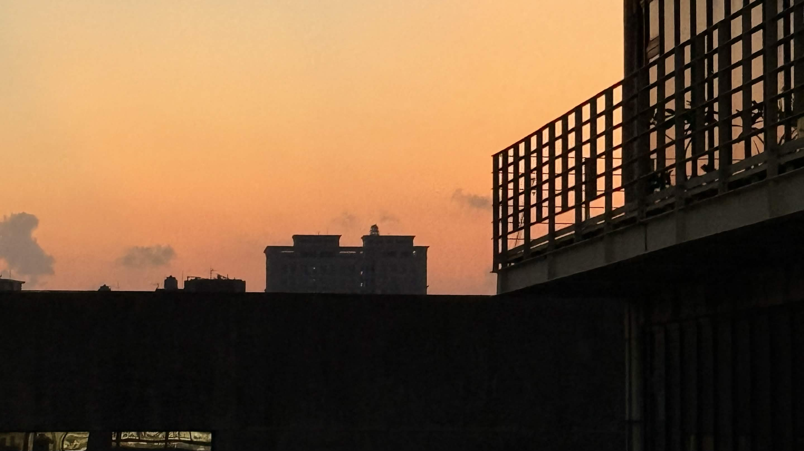
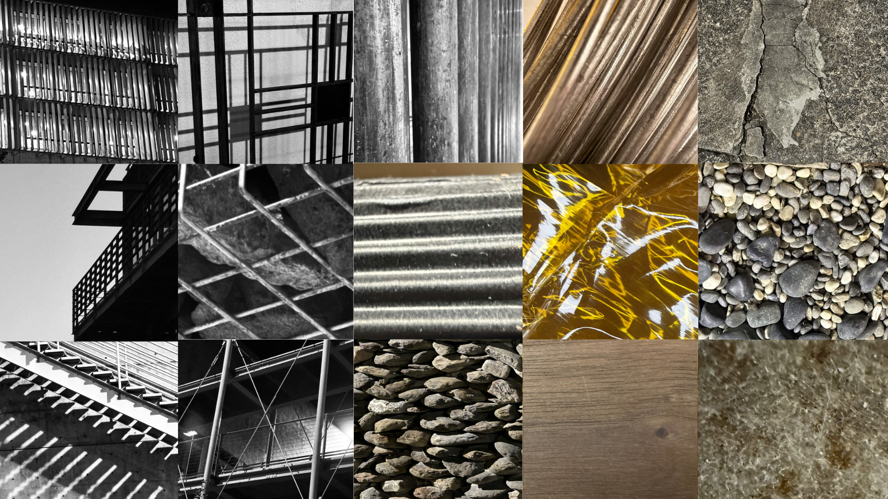
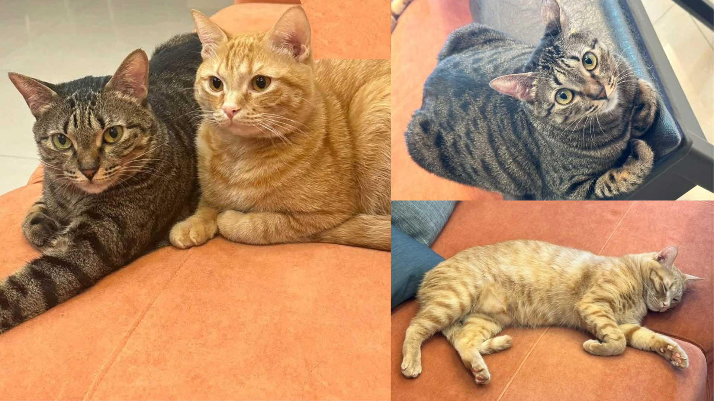

✦ 來自東華大學的大三轉學生，比較擅長剪影片跟寫劇本與分鏡，想來這裡精進3D動畫以及遊戲製作相關的能力，希望能找到志同道合的朋友。

各以數張影像分別捕捉建築、空間與物體，透過視角切換抽離被攝物件的原始屬性標籤，轉化為純粹幾何、光影與構圖的探討；並透過材質特寫與群集狀態實驗，重新詮釋物件的質感與視覺感知觀點。

家裡兩隻貓，狸花是皮蛋，橘貓是布丁，一隻會瘋狂撕咬衛生紙，一隻會殘虐撕咬充電線。
© Cyrus.L.S , 2026. 學生作品